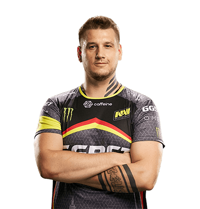

Danylo "Zeus" Teslenko

Данило Ігорович Тесленко «Zeus» (народився 8 жовтня 1987 року, м. Харків) — кіберспортсмен, професійний гравець в Counter-Strike та Counter-Strike: Global Offensive, колишній капітан команди Natus Vincere, а також засновник і директор кіберспортивної організації Pro100. Також займається трансляціями на Twitch TV.
Кар'єру кіберспортсмена Данило «Zeus» Тесленко почав у 2002 році, граючи в одній з найсильніших команд того часу - Arsenal. У 2004 році він познайомився з Edward і вони почали грати під тегом Pro100. Через три роки, уже в складі Virtus.Pro, Zeus і його напарники відвідали більшість турнірів в СНД. У турнірі Asus Cup вони отримували перемогу 9 разів. Zeus і команда перемагали таких суперників, як Fnatic, Frag eXecutors, SK-Gaming, mTw. Данило за свою професійну кар'єру кіберспортсмена побував в таких командах як pro100, Virtus.pro,Gambit Gaming ,KerchNET, Natus Vincere. 4 серпня 2016 року Данило пішов з основного складу «Na'Vi» в inactive. Його замінив гравець Олександр «s1mple» Костильов. Zeus приєднався до команди Gambit eSports в якості капітана, з якими він зміг виграти свій перший Major турнір, який проходив у Кракові. 9 серпня 2017 року Данило повернувся в команду «Na'Vi» разом зі своїм хорошим другом, уже минулим тренером Gambit eSports, Михайлом «Kane» Благіним. Також Данило є творцем кіберспортивної школи «Zeus Cyber School».